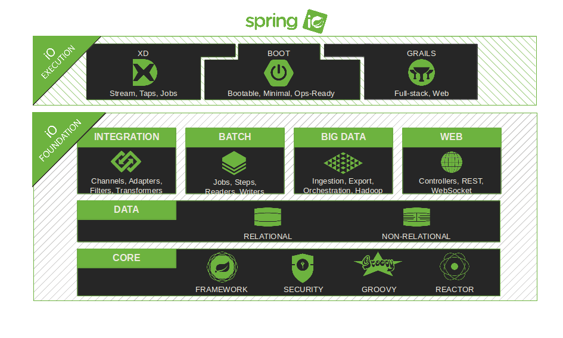
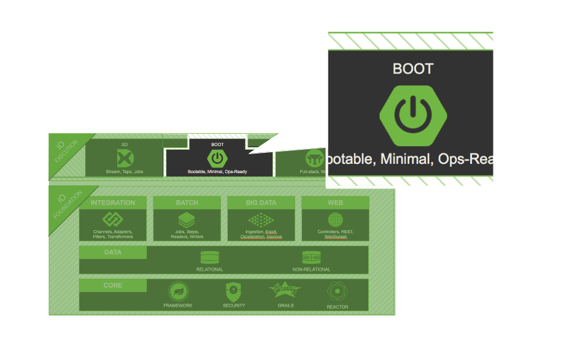
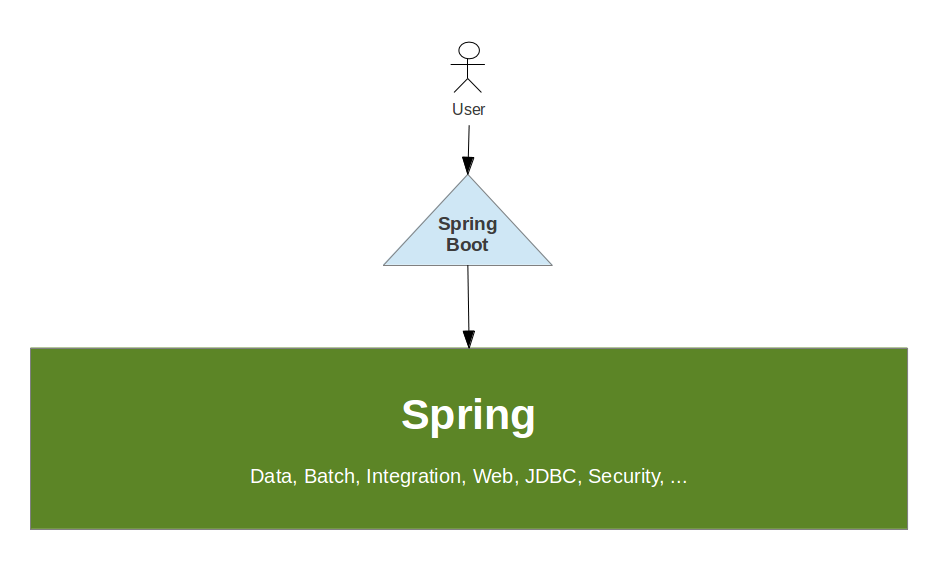
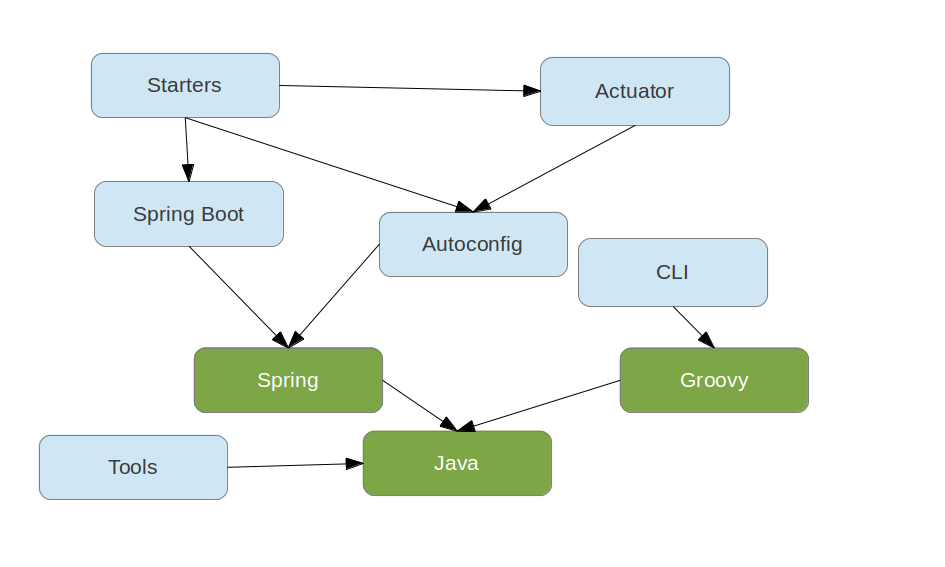

Dave Syer, Phil Webb, 2013
Twitter: @david_syer, @phillip_webb
Email: [dsyer, pwebb]@gopivotal.com
(Introduction to Spring Boot)



Spring Boot:
spring-* projects)An opportunity for Spring to be opinionated
@RestController
class Example {
@RequestMapping("/")
public String hello() {
return "Hello World!";
}
}
$ spring run app.groovy
... application is running at http://localhost:8080
// import org.springframework.web.bind.annotation.RestController
// other imports ...
@RestController
class Example {
@RequestMapping("/")
public String hello() {
return "Hello World!";
}
}
// import org.springframework.web.bind.annotation.RestController
// other imports ...
// @Grab("spring-boot-web-starter")
@RestController
class Example {
@RequestMapping("/")
public String hello() {
return "Hello World!";
}
}
// import org.springframework.web.bind.annotation.RestController
// other imports ...
// @Grab("spring-boot-web-starter")
// @EnableAutoConfiguration
@RestController
class Example {
@RequestMapping("/")
public String hello() {
return "Hello World!";
}
}
// import org.springframework.web.bind.annotation.RestController
// other imports ...
// @Grab("spring-boot-web-starter")
// @EnableAutoConfiguration
@RestController
class Example {
@RequestMapping("/")
public String hello() {
return "Hello World!";
}
// public static void main(String[] args) {
// SpringApplication.run(Example.class, args);
// }
}
import org.springframework.boot.SpringApplication;
import org.springframework.boot.autoconfigure.EnableAutoConfiguration;
import org.springframework.context.annotation.*;
@RestController
@EnableAutoConfiguration
public class MyApplication {
@RequestMapping("/")
public String sayHello() {
return "Hello World!";
}
public static void main(String[] args) {
SpringApplication.run(MyApplication.class, args);
}
}
@Grab('spring-boot-starter-web')
or
<dependency>
<groupId>org.springframework.boot</groupId>
<artifactId>spring-boot-starter-web</artifactId>
</dependency>
SpringApplication app = new SpringApplication(MyApplication.class);
app.setShowBanner(false);
app.run(args);
ApplicationContextEmbeddedWebApplicationContext for web appsSpringApplication.run(MyApplication.class, args)CommandLineRunner is a hook to run application-specific code after
the context is created@Component
public class Startup implements CommandLineRunner {
@Override
public void run(String... args) throws Exception {
System.out.println("Hello World");
}
}
DataSource and JdbcTemplatePlease open an issue on github if you want support for something else
Flexible builder style with fluent API for building
SpringApplication with more complex requirements.
new SpringApplicationBuilder(ParentConfiguration.class)
.profiles("adminServer", "single")
.child(AdminServerApplication.class)
.run(args);
ApplicationContext has an EnvironmentEnvironment available since 3.1@Profile switchingSystem properties and OS ENV varsJust put application.properties in your classpath or next to you jar, e.g.
application.properties
server.port: 9000
Properties can be overridden (command line arg > file > classpath)
MyProperties.java
@ConfigurationProperties(prefix="mine")
public class MyPoperties {
private Resource location;
private boolean skip = true;
// ... getters and setters
}
application.properties
mine.location: classpath:mine.xml
mine.skip: false
$ spring run *.groovy
or
$ java -jar yourapp.jar
@EnableAutoConfiguration
annotation creates a whole Spring context
@Grab('spring-boot-starter-actuator')
Adds common non-functional features to your application and exposes MVC endpoints to interact with them.
/metrics, /health, /trace, /dump, /shutdown, /beans, /env/infoIf embedded in a web app or web service can use the same port or a
different one (management.port) and/or a different network interface
(management.address) and/or context path (management.context_path).
@david_syer, @phillip_webb /
#